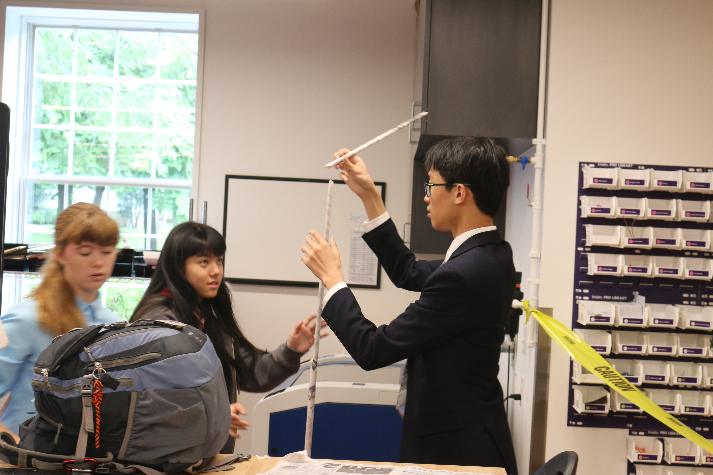
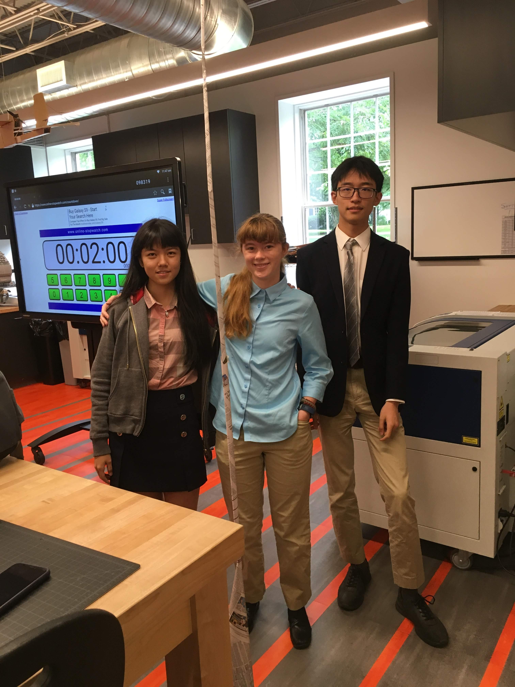

Design Challenges
21 August 2018
Challenge 1: Golf Ball Drop
In this challenge, we were given twelve straws and some tape and instructed to create a contraption that would catch and hold a golf ball
dropped into it from a height of six feet. In our group, we created a cradle-like structure, utilizing the bending point of the straw as
the bottom of the cradle. Since only three straws were permitted to touch the ground at once, we created legs on two sides and cut a straw
in half lengthwise to run along the bottom such that only three straws would be touching. Our greatest challenge was the limited amount of
tape, but we managed to overcome this by holding the straws together with the smallest possible bits of tape.

Our design was not particularly effective, but it was probably one of the more effective designs in the class. When the golf ball was
dropped into our cradle, it took a moment or two to bounce or roll out, but on each of the three attempts, the golf ball did not ever
remain in the cradle.

I was active throughout the entire design process, and I would say that the work done by my team during this challenge was truly
a group effort. We all contributed to all the ideas of how to construct our contraption, and everyone was active in the building
phase, as well. Personally, I think I was slightly more active in building than in designing, but I definitely contributed to the
design, too.
Challenge 2: Newspaper Towers
In this challenge, we were given a single issue of a newspaper and some tape and told to build the highest tower possible. Our team
chose to build a tower out of interlocked rolled sheets, with a base made up of a cone shape. This design was especially useful
because it required an exceptionally minimal amount of tape. Our only major challenge in this endeavor was determining when to stop
building and finding the balance between height and stability.

Our tower was the tallest in the class, with a final measurement of 88 inches tall. Our structure was very effective because of the
strength of rolled cylinders and the structural integrity that comes with having a wide base. It helped that we rolled our newspaper
diagonally in order to increase the height added with each new roll of paper, and thus decreased the amount of weight added to the
top of our tower.It also helped that we made each consecutive roll a slightly different thickness such that we could insert each new
roll into the previous one. This decreased our tape usage and added to the stability of our tower.

I was active through the entire process. This challenge was great for my team because we worked very well together and hardly had to
discuss our plans for our structure. After a few minutes of discussion at the beginning, we were all on the same page as far as what
needed done, and so we all worked together to build our very beautiful, very tall tower. The only thing my team really had any
disagreement on was towards the end when we debated whether to add more rolls to the top of our tower. I wanted to add more because
I believed our tower was strong enough to take it, but my teammates did not want to take the risk. Eventually, we compromised and
topped our tower off with a half roll.